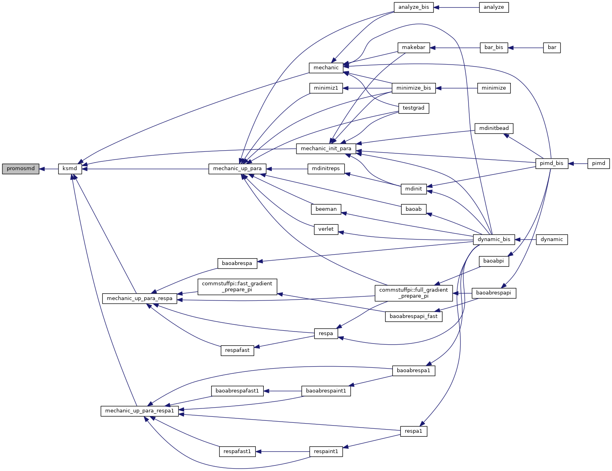

|
Tinker-HP v1.3
|
|
Tinker-HP v1.3
|
Go to the source code of this file.
Functions/Subroutines | |
| subroutine | promosmd (i) |
| "promosmd" writes a short message containing information about the nature of the calculation performed and some designs More... | |
| subroutine promosmd | ( | integer | i | ) |
"promosmd" writes a short message containing information about the nature of the calculation performed and some designs
| no | params |
Definition at line 30 of file promosmd.f90.
Referenced by ksmd().

 1.8.5
1.8.5